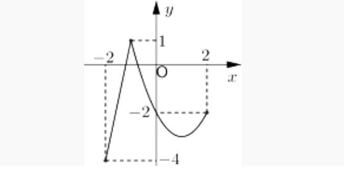
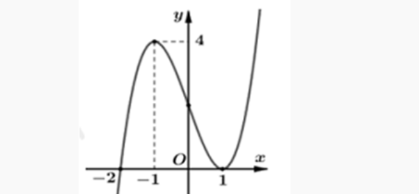
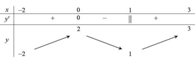
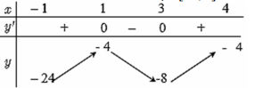
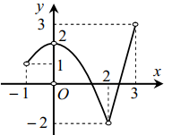

üìò TO√ÅN TH·ª∞C T·∫æ B√ÄI 3 - T√ÄI LI·ªÜU H·ªåC T·∫¨P
Môn Toán - Lớp 12
üìò D·∫†NG TR·∫ÆC NGHI·ªÜM
Từ câu 1 - câu 71
Câu 1. (THPT Hàm Rồng - Thanh Hóa 2025) Cho hàm số $y = f(x)$ liên tục trên đoạn [−3;5] và có đồ thị như hình vẽ. Giá trị lớn nhất của hàm số $y = f(x)$ trên đoạn [−3;5] bằng

Chọn A Dựa vào đồ thị hàm số ta thấy $\max_{[-3;5]} f(x) = f(5) = 3$.
Câu 2. (THPT Lương Tài 2 - Bắc Ninh 2025) Cho hàm số $y = f(x)$ liên tục trên đoạn [–4;4] có bảng biến thiên như hình vẽ

Giá trị nhỏ nhất của hàm số đã cho trên đoạn [–4;4] bằng
Chọn C Dựa vào BTT giá trị nhỏ nhất là –71.
Câu 3. (THPT Tiên Du - Bắc Ninh 2025) Cho hàm số $y = f(x)$ xác định trên [-2;4] có đồ thị như hình vẽ bên. Giá trị lớn nhất hàm số $y = f(x)$ trên đoạn [0;4] là

Chọn B Xét hàm số $y = f(x)$ trên đoạn [0;4] ta suy ra $\max_{[0;4]} f(x) = f(3) = 2$
Câu 4. (THPT Nguyễn Đăng Đạo - Bắc Ninh 2025) Gọi $M,m$ lần lượt là giá trị lớn nhất và giá trị nhỏ nhất của hàm số $f(x)=x^4-2x^2-1$ trên đoạn [-1;2]. Giá trị của biểu thức $M+3m$ bằng
Chọn A Ta có: $f'(x) = 4x^3 - 4x$. Xét $f'(x)=0 \Leftrightarrow \begin{cases} x=-1 \\ x=0 \\ x=1 \end{cases}$ Ta có $f(-1) = -2; f(0) = -1; f(1) = -2; f(2) = 7$ Vậy $M=7, m=-2$. Do đó $M+3m = 7+3(-2)=1$
Câu 5. (THPT Gia Bình - Bắc Ninh 2025) Cho hàm số $y = f(x)$ liên tục và có bảng biến thiên trên đoạn [-1;3] như hình vẽ bên. Khẳng định nào đúng?

Chọn C Từ bảng biến thiên, ta thấy giá trị lớn nhất của hàm số trên đoạn [-1;3] bằng 5.
Câu 6. (THPT Thạch Thành 1 - Thanh Hóa 2025) Cho hàm số $y = f(x)$ liên tục và có bảng biến thiên trên đoạn [-1;3] như hình vẽ bên. Khẳng định nào sau đây là \textbf{đúng}?

Chọn B Căn cứ vào bảng biến thiên ta có $\max_{[-1;3]} f(x) = 5$
Câu 7. (THPT Thạch Thành 1 - Thanh Hóa 2025) Giá trị lớn nhất của hàm số $f(x) = x^3 - 3x^2 - 9x + 10$ trên đoạn [-2;2] bằng:
Chọn C $f'(x) = 3x^2 - 6x - 9$ $f'(x) = 0 \Rightarrow 3x^2 - 6x - 9 = 0 \Rightarrow \begin{cases} x = -1(n) \\ x = 3(l) \end{cases}$ $f(-2) = 8; f(-1) = 15; f(2) = -12$ Vậy giá trị lớn nhất của hàm số $f(x) = x^3 - 3x^2 - 9x + 10$ trên đoạn [-2;2] bằng $f(-1) = 15$
Câu 8. (THPT Yên Lạc - Vĩnh Phúc 2025) Cho hàm số $f(x)$ có đồ thị như hình vẽ

Giá trị lớn nhất của hàm số đã cho trên khoảng $(-\infty;-1)$ bằng
Chọn C Giá trị lớn nhất của hàm số đã cho trên khoảng $(-\infty;-1)$ bằng $-6$
Câu 9. (THPT Chuyên Vĩnh Phúc 2025) Cho hàm số $y = f(x)$ có bảng biến thiên trên đoạn [0;3] như sau.

Giá trị nhỏ nhất của hàm số $y = f(x)$ trên đoạn [0;3] là
Chọn A Dựa vào bảng biến thiên ta thấy giá trị nhỏ nhất của hàm số $y=f(x)$ trên đoạn [0;3] là $-4$.
Câu 10. (THPT Nguyễn Viết Xuân - Vĩnh Phúc 2025) Giá trị nhỏ nhất của hàm số $y = x^3 + 3x - 6$ trên đoạn $[1;3]$ là:
Chọn B Ta có $f'(x) = 3x^2 + 3 > 0$ với $\forall x \in [1;3]$ nên hàm số đồng biến trên $[1;3]$. Do đó hàm số đạt giá trị nhỏ nhất tại $x=1 \Rightarrow \min_{[1;3]} f(x) = f(1) = -2$.
Câu 11. (THPT Thuận Thành 1&2 - Bắc Ninh 2025) Giá trị lớn nhất của hàm số $y = x^3 - 3x + 1$ trên đoạn $[-2;0]$ là
Chọn B Ta có $y' = 3x^2 - 3$. Khi đó $y'=0 \Leftrightarrow x^2 = 1 \Leftrightarrow \begin{cases} x=1 \notin [-2;0] \\ x=-1 \in [-2;0] \end{cases}$. Do đó $y(-2)=-1$; $y(-1)=3$; $y(0)=1$. Vậy giá trị lớn nhất của hàm số $y = x^3 - 3x + 1$ trên đoạn $[-2;0]$ là $y(-1)=3$.
Câu 12. (THPT Hùng Vương - Bình Thuận 2025) Cho hàm số $y = f(x)$ có bảng biến thiên như sau

Khẳng định nào sau đây sai?
Chọn B
Câu 13. (THPT Triệu Sơn 4 - Thanh Hóa 2025) Cho hàm số $y = f(x)$ liên tục và có đồ thị trên đoạn $[-2;4]$ như hình vẽ bên.

Tổng giá trị lớn nhất và nhỏ nhất của hàm số $y = f(x)$ trên đoạn $[-2;4]$ bằng
Chọn C Ta có: $\min_{[-2;4]} f(x) = -4$, $\max_{[-2;4]} f(x) = 7$. Vậy $M + m = 3$.
Câu 14. (THPT Triệu Sơn 1 - Thanh Hóa 2025) Giá trị nhỏ nhất của hàm số $f(x) = x^3 - 3x + 2$ trên đoạn $[-3;3]$ bằng
Chọn B $f'(x) = 3x^2 - 3$ $f'(x) = 0 \Leftrightarrow x^2 = 1 \Leftrightarrow \begin{cases} x=1 \in [-3;3] \\ x=-1 \in [-3;3] \end{cases}$ Có $f(-3) = -27 + 9 + 2 = -16$. $f(-1) = -1 + 3 + 2 = 4$. $f(1) = 1 - 3 + 2 = 0$. $f(3) = 27 - 9 + 2 = 20$. Nên giá trị nhỏ nhất của hàm số $f(x) = x^3 - 3x + 2$ trên đoạn $[-3;3]$ bằng $-16$.
Câu 15. (THPT Cụm trường Hải Dương 2025) Giá trị nhỏ nhất của hàm số $f(x) = x^3 - 6x^2 + 9x - 1$ trên nửa khoảng $[-1; +\infty)$ là
Chọn B Ta có $f'(x) = 3x^2 - 12x + 9$, $f'(x) = 0 \Leftrightarrow \begin{cases} x=1 \in [-1; +\infty) \\ x=3 \in [-1; +\infty) \end{cases}$ Bảng biến thiên

Câu 16. (Sở Hà Tĩnh 2025) Cho hàm số $y = f(x)$ có bảng biến thiên như hình bên.

Giá trị lớn nhất của hàm số đã cho trên đoạn $[-2;4]$ bằng
Chọn B Dựa vào bảng biến thiên của hàm số ta có giá trị lớn nhất của hàm số đã cho trên đoạn $[-2;4]$ là 10, khi $x = -1$.
Câu 17. (Sở Vĩnh Phúc 2025) Cho hàm số $y = f(x)$ liên tục trên đoạn $[-2;6]$ và có đồ thị như hình vẽ sau:

Tổng giá trị lớn nhất và giá trị nhỏ nhất của hàm số $y = f(x)$ trên đoạn $[-2;6]$.
Chọn A Dựa vào đồ thị hàm số trên đoạn $[-2;6]$ có giá trị lớn nhất bằng 5 và giá trị nhỏ nhất bằng $-4$ Vậy tổng giá trị lớn nhất và giá trị nhỏ nhất của hàm số $y = f(x)$ trên đoạn $[-2;6]$ bằng 1.
Câu 18. (Chuyên Thái Bình 2025) Cho hàm số $y = f(x)$ liên tục và có bảng biến thiên trên đoạn $[-1;3]$ như hình vẽ bên.
Khẳng định nào sau đây đúng?
Chọn A Từ bảng biến thiên của hàm số $y = f(x)$ ta thấy $\max_{[-1;3]} f(x) = f(0) = 5$.
Câu 19. (Chuyên Vinh 2025) Cho hàm số $y = f(x)$ có bảng xét dấu đạo hàm như sau

Mệnh đề nào sau đây đúng?
Chọn A
Câu 20. (THPT Cẩm Xuyên - Hà Tĩnh 2025) Giá trị lớn nhất của hàm số $f(x) = x^3 + 3x - 6$ trên đoạn $[1;3]$ là
Chọn A Xét hàm số $f(x) = x^3 + 3x - 6$ trên đoạn $[1;3]$ $f'(x) = 3x^2 + 3 > 0, \forall x \in [1;3]$ Vậy $\max_{[1;3]} f(x) = f(3) = 30$
Câu 21. (THPT Trần Nguyên Hãn - Hải Phòng 2025) Cho hàm số $y = f(x)$ liên tục trên $[-1;3]$ và có đồ thị như hình bên

Gọi $M, m$ lần lượt là giá trị lớn nhất và nhỏ nhất của hàm số đã cho trên đoạn $[-1;3]$. Giá trị của $M+m$ là:
Chọn D Từ đồ thị hàm số ta thấy giá trị lớn nhất và nhỏ nhất của hàm số đã cho trên đoạn $[-1;3]$. Lần lượt là $M=2; m=-4 \Rightarrow M+m=-2$.
Câu 22. (THPT Sào Nam - Quảng Nam 2025) Giá trị nhỏ nhất của hàm số $f(x)=-x^3-x+2$ trên đoạn $[-2;0]$ bằng?
Chọn A Ta có $f'(x)=-3x^2-1<0, \forall x$. Ta có bảng biến thiên \[ \begin{array}{c|cc} x & -2 & 0 \\ \hline y' & & - \\ \hline y & 12 & \\ & & \searrow \\ & & 2 \end{array} \] Giá trị nhỏ nhất của hàm số $f(x)=-x^3-x+2$ trên đoạn $[-2;0]$ bằng $f(0)=2$.
Câu 23. (Cụm trường Nguyễn Hiền - Lê Hồng Phong - Quảng Nam 2025) Giá trị lớn nhất của hàm số $f(x) = -x^4 + 12x^2 + 1$ trên đoạn $[-1;2]$ bằng
Chọn A $f'(x) = -4x^3 + 24x = 0 \Leftrightarrow -4x(x^2-6)=0 \Leftrightarrow \begin{cases} x = -\sqrt{6} \notin [-1;2] \\ x=0 \\ x=\sqrt{6} \end{cases}$ Có $f(-1)=12; f(0)=1; f(\sqrt{6})=37$. Vậy $\max_{[-1;2]} f(x) = 37$.
Câu 24. (THPT Nông Cống 3 - Thanh Hóa 2025) Tìm giá trị nhỏ nhất của hàm số $y=-x+3-\dfrac{1}{x+2}$ trên nửa khoảng $[-4;-2)$.
Chọn C Ta có $y=-x+3-\dfrac{1}{x+2} \Rightarrow y'=-1+\dfrac{1}{(x+2)^2} = \dfrac{-x^2-4x-3}{(x+2)^2}$ Với $y'=0 \Leftrightarrow -x^2-4x-3=0 \Leftrightarrow \begin{cases} x=-1 \notin [-4;-2) \\ x=-3 \in [-4;-2) \end{cases}$ \[ \begin{array}{c|cccc||cc} x & -4 & & -3 & & -2 & -1 & 2 \\ \hline f'(x) & & - & 0 & + & || & + & 0 & - \\ \hline f(x) & \frac{15}{2} & & & & +\infty & & 3 & \\ & & \searrow & & \nearrow & & & \nearrow & & \searrow \\ & & & 7 & & -\infty & & & & -\infty \end{array} \] Dựa vào đồ thị $\min_{[-4;-2)} y = 7$.
Câu 25. (THPT Anh Sơn 3 - Nghệ An 2025) Giá trị lớn nhất của hàm số $f(x)=x^3-3x^2-9x+10$ trên đoạn $[-2;2]$ là
Chọn C Ta có $f'(x) = 3x^2-6x-9=0 \Rightarrow \begin{cases} x=3 \\ x=-1 \end{cases}$ $\Rightarrow f(-1)=15; f(-2)=8; f(2)=-12$ Vậy giá trị lớn nhất của hàm số trên đoạn $[-2;2]$ là 15
Câu 26. (Sở Bắc Giang 2025) Giá trị nhỏ nhất của hàm số $y=x^4-4x^2+3$ trên đoạn $[0;4]$ là
Chọn D Ta có $y=x^4-4x^2+3 \Rightarrow y'=4x^3-8x$ Cho $y'=0 \Leftrightarrow 4x^3-8x=0 \Leftrightarrow \begin{cases} x=0 \in [0;4] \\ x=\sqrt{2} \in [0;4] \\ x=-\sqrt{2} \notin [0;4] \end{cases}$ Khi đó $y(0)=3; y(\sqrt{2})=-1; y(4)=195$ Vậy giá trị nhỏ nhất của hàm số $y=x^4-4x^2+3$ trên đoạn $[0;4]$ là $-1$.
Câu 29. (Sở Thái Nguyên 2025) Giá trị lớn nhất của hàm số $y=x^3-3x+4$ trên đoạn $[-2;0]$ bằng
Chọn D Hàm số liên tục và xác định trên đoạn $[-2;0]$. Ta có $y'=3x^2-3$ $y'=0 \Leftrightarrow 3x^2-3=0 \Leftrightarrow \begin{cases} x=1 \notin [-2;0] \\ x=-1 \in [-2;0] \end{cases}$. Có $y(-2)=2; y(-1)=6$ và $y(0)=4$. Do đó $\max_{[-2;0]} y = y(-1)=6$.
Câu 30. (Chuyên Hùng Vương - Phú Thọ 2025) Cho hàm số $y=f(x)$ xác định trên $\mathbb{R}$ và có bảng xét dấu $f'(x)$ như sau:
Khẳng định nào dưới đây đúng?
Chọn A Ta có bảng biến thiên của hàm số
Câu 31. (Sở Lào Cai 2025) Cho hàm số $y=f(x)$ liên tục trên đoạn $[1;5]$ và có đồ thị trên như hình vẽ sau

Trên đoạn $[1;5]$, hàm số đã cho đạt giá trị lớn nhất tại điểm
Chọn C Dựa vào đồ thị của hàm số $y=f(x)$ ta có trên đoạn $[1;5]$, hàm số đã cho đạt giá trị lớn nhất tại điểm $x=2$.
Câu 32. (THPT Ngô Sĩ Liên - Bắc Giang 2025) Cho hàm số $f(x)$ liên tục trên $[-1;5]$ và có đồ thị trên đoạn $[-1;5]$ như hình vẽ bên dưới. Tổng giá trị lớn nhất và giá trị nhỏ nhất của hàm số $f(x)$ trên đoạn $[-1;5]$ bằng

Chọn B Quan sát đồ thị ta có: $\max_{[-1;5]} f(x)=3, \min_{[-1;5]} f(x)=-2$. Vậy tổng giá trị lớn nhất và giá trị nhỏ nhất của hàm số $f(x)$ trên đoạn $[-1;5]$ bằng 1.
Câu 33. (Liên Trường Nghệ An 2025) Tìm giá trị lớn nhất $M$ của hàm số $y = x^3+3x^2-9x-6$ trên đoạn $[-1;2]$.
$y'=3x^2+6x-9=0 \Leftrightarrow \begin{cases} x=1 \\ x=-3 \notin [-1;2] \end{cases}$. Trên đoạn $[-1;2]$ ta có $\begin{cases} y(-1)=5 \\ y(1)=-11 \\ y(2)=-4 \end{cases}$ Vậy giá trị lớn nhất của hàm số $y=x^3+3x^2-9x-6$ trên đoạn $[-1;2]$ là $M=5$.
Câu 34. (THPT Hoằng Hóa 2-Thanh Hóa 2025) Cho hàm số $f(x)$ liên tục trên đoạn $[-2;2]$ có đồ thị như hình vẽ. Gọi $M$ và $m$ lần lượt là giá trị lớn nhất và nhỏ nhất của hàm số trên đoạn $[-2;2]$. Khi đó, tổng $M+m$ bằng
Chọn D Dựa vào đồ thị hàm số ta thấy giá trị lớn nhất của hàm số trên đoạn $[-2;2]$ là $y=3$. Giá trị nhỏ nhất của hàm số trên đoạn $[-2;2]$ là $y=-1$. Vậy, tổng $M+m=2$.
Câu 34. (Cụm Ninh Giang - Tứ Kỳ - Gia Lộc 2025) Giá trị lớn nhất $M$ của hàm số $y=x^3+3x^2-9x-6$ trên đoạn $[-1;2]$ là?
Ta có: $y=x^3+3x^2-9x-6 \Rightarrow y'=3x^2+6x-9=0 \Leftrightarrow \begin{cases} x=1(n) \\ x=-3(l) \end{cases}$ Tính: $y(-1)=5; y(1)=-11; y(2)=-4$. Vậy $M=5$.
Câu 35. (THPT Tư Nghĩa 1 - Quảng Ngãi 2025) Cho hàm số $y=f(x)$ có đồ thị trên đoạn $[-3;5]$ như hình vẽ. Gọi $M,m$ lần lượt là giá trị lớn nhất và giá trị nhỏ nhất của hàm số đã cho trên đoạn $[-3;5]$. Tính $2M-m$.

Xét hình ảnh đồ thị của hàm số đã cho trên đoạn $[-3;5]$, ta có $M=2; m=-2 \Rightarrow 2M-m=6$.
Câu 36. (THPT Mai Trúc Loan - Hà Tĩnh 2025) Giá trị lớn nhất của hàm số $y=x^3-3x$ trên đoạn $[0;3]$ bằng
Ta có $y'=0 \Leftrightarrow 3x^2-3=0 \Leftrightarrow \begin{cases} x=1 \in [0;3] \\ x=-1 \notin [0;3] \end{cases}$ $y(0)=0; y(1)=-2; y(3)=18$. Giá trị lớn nhất của hàm số trên đoạn $[0;3]$ là 18, đạt được khi $x=3$.
Câu 37. (THPT Triệu Quang Phục - Hưng Yên 2025) Cho hàm số $y=f(x)$ liên tục trên đoạn $[-4;3]$, có bảng biến thiên như hình vẽ. Khẳng định nào sau đây là đúng?

Chọn B
Câu 37. (Cụm Chuyên Môn Đăk Lak 2025) Cho hàm số $y=f(x)$, có đồ thị trên đoạn [-2;2] như hình vẽ.
Gọi giá trị lớn nhất và giá trị nhỏ nhất của hàm số $f(x)$ trên $[-2;2]$ lần lượt là $M$ và $m$. Khi đó $M-m$ bằng:
Ta có giá trị lớn nhất và giá trị nhỏ nhất của hàm $f(x)$ lần lượt là $M=1; m=-4$. Vậy $M-m=1-(-4)=5$. Chọn A
Câu 37. (Cụm Chuyên Môn Đăk Lak 2025) Cho hàm số $y=f(x)$ có đồ thị như hình vẽ. Giá trị lớn nhất của hàm số $y=f(x)$ trên đoạn $[-2;0]$ bằng:
Giá trị lớn nhất của hàm số $y=f(x)$ trên đoạn $[-2;0]$ bằng $f(-1)=4$. Chọn B
Câu 38. (Sở Hậu Giang 2025) Giá trị nhỏ nhất của hàm số $y=x^4-2x^2-5$ trên đoạn $[-2;3]$ bằng
Ta có: $y'=4x^3-4x \Rightarrow y'=0 \Leftrightarrow 4x^3-4x=0 \Leftrightarrow \begin{cases} x=0 \\ x=1 \\ x=-1 \end{cases}$, các nghiệm đều thuộc đoạn $[-2;3]$. Lại có: $y(0)=-5; y(-2)=3; y(-1)=-6; y(1)=-6; y(3)=58$. Vậy giá trị nhỏ nhất của hàm số $y=x^4-2x^2-5$ trên đoạn $[-2;3]$ bằng $-6$.
Câu 39. (THPT Bắc Đông Quan - Thái Bình 2025) Gọi $M, m$ lần lượt là giá trị lớn nhất và giá trị nhỏ nhất của hàm số $y=2-\sin x$. Khẳng định nào sau đây đúng?
Chọn D Ta có: $-1 \le \sin x \le 1 \Leftrightarrow 1 \le 2-\sin x \le 3 \Rightarrow 1 \le y \le 3$ $y=3 \Leftrightarrow \sin x = -1 \Leftrightarrow x = -\dfrac{\pi}{2}+k2\pi$ $y=1 \Leftrightarrow \sin x = 1 \Leftrightarrow x = \dfrac{\pi}{2}+k2\pi$ Vậy $m=1; M=3$.
Câu 40. (Sở Hà Tĩnh 2025) Cho hàm số $y=f(x)$ có bảng biến thiên trên đoạn $[0;3]$ như sau:

Giá trị nhỏ nhất của hàm số $y=f(x)$ trên đoạn $[0;3]$ là
Dựa vào bảng biến thiên của hàm số $y=f(x)$ trên đoạn $[0;3]$, ta có giá trị nhỏ nhất của hàm số $y=f(x)$ trên đoạn $[0;3]$ là $-4$.
Câu 41. Cho hàm số $y = f(x)$ liên tục và có bảng biến thiên trong đoạn $[-1;3]$ như hình.

Gọi $M$ là giá trị lớn nhất của hàm số $y = f(x)$ trên đoạn $[-1;3]$. Tìm mệnh đề đúng?
Dựa vào bảng biến thiên, giá trị lớn nhất $M$ đạt tại $x=2$.
Câu 42. Cho hàm số $y = f(x)$ xác định và liên tục trên $[-2;3]$ có bảng biến thiên như hình bên.
Gọi $M, m$ lần lượt là giá trị lớn nhất và nhỏ nhất của hàm số trên đoạn $[-2;3]$. Tổng $M + m$ bằng
Dựa vào bảng biến thiên, $M = 3$ (tại $x=0$) và $m = 1$ (tại $x=3$). Vậy $M + m = 4$.
Câu 43. Cho hàm số $y = f(x)$ liên tục trên $\mathbb{R}$ và có bảng biến thiên trên đoạn $[-1;4]$ như hình dưới. Gọi $M$ và $m$ lần lượt là giá trị lớn nhất và nhỏ nhất của hàm số đã cho trên đoạn $[-1;4]$. Giá trị của $M + m$ bằng
Dựa vào bảng biến thiên, $M = -4$ (tại $x=1$) và $m = -24$ (tại $x=3$). Vậy $M + m = -28$. 
Câu 44. Cho hàm số $y = f(x)$ liên tục trên đoạn $[-1;3]$ và có đồ thị như hình. Gọi $M$ và $m$ lần lượt là giá trị lớn nhất và nhỏ nhất của hàm số đã cho trên đoạn $[-1;3]$. Giá trị của $M - m$ bằng
Dựa vào đồ thị, $M = 3$ (tại $x=0$) và $m = -2$ (tại $x=3$). Vậy $M - m = 5$. 
Câu 45. Cho hàm số $y = f(x)$ xác định, liên tục trên đoạn $[-2;2]$ và có đồ thị là đường cong trong hình vẽ bên dưới. Gọi $M, m$ lần lượt là giá trị lớn nhất và nhỏ nhất của hàm số trên đoạn $[-2;2]$. Giá trị của $M - m$ bằng
Dựa vào đồ thị, $M = 4$ (tại $x=0$) và $m = -4$ (tại $x=-2$). Vậy $M - m = 8$.

Câu 46. Cho hàm số $y = f(x)$ xác định và liên tục trên $\mathbb{R}$ có đồ thị bên dưới. Gọi $M, m$ lần lượt là giá trị lớn nhất và nhỏ nhất của hàm số trên đoạn $[1;3]$. Giá trị của $M + m$ bằng
Dựa vào đồ thị, $M = -1$ (tại $x=1$) và $m = -3$ (tại $x=2$). Vậy $M + m = -4$.

Câu 47. Giá trị nhỏ nhất của hàm số $f(x) = x^3 - 21x$ trên đoạn $[2;19]$ bằng
$f'(x) = 3x^2 - 21 = 0 \Leftrightarrow x = \pm \sqrt{7}$. Trên $[2;19]$, $x = \sqrt{7} \approx 2.65$. So sánh $f(2) = -34$, $f(\sqrt{7}) = -14\sqrt{7}$, $f(19) = 6460$. Vậy $\min f(x) = -14\sqrt{7}$.
Câu 48. Tìm giá trị nhỏ nhất của hàm số $y = x^3 - 3x + 5$ trên $[0;2]$.
$y' = 3x^2 - 3 = 0 \Leftrightarrow x = \pm 1$. Trên $[0;2]$, $x=1$. So sánh $y(0)=5$, $y(1)=3$, $y(2)=7$. Vậy $\min y = 3$.
Câu 49. Tìm giá trị lớn nhất của hàm số $f(x) = x^4 - 2x^2 + 1$ trên $[0;2]$.
$f'(x) = 4x^3 - 4x = 4x(x^2 - 1) = 0 \Leftrightarrow x = 0, x = \pm 1$. Trên $[0;2]$, $x=0,1,2$. So sánh $f(0)=1$, $f(1)=0$, $f(2)=9$. Vậy $\max f(x) = 9$.
Câu 50. Giá trị lớn nhất của hàm số $f(x) = x^4 - 2x^2 + 3$ trên đoạn $[0;\sqrt{3}]$ bằng
$f'(x) = 4x^3 - 4x = 4x(x^2 - 1) = 0 \Leftrightarrow x = 0, x = \pm 1$. Trên $[0;\sqrt{3}]$, $x=0,1,\sqrt{3}$. So sánh $f(0)=3$, $f(1)=2$, $f(\sqrt{3})=9$. Vậy $\max f(x) = 9$.
Câu 51. Giá trị lớn nhất của hàm số $y = x^4 - 4x^2 + 5$ trên đoạn $[-2;3]$ bằng
$y' = 4x^3 - 8x = 4x(x^2 - 2) = 0 \Leftrightarrow x = 0, x = \pm \sqrt{2}$. So sánh $y(-2)=5$, $y(0)=5$, $y(\sqrt{2})=1$, $y(3)=50$. Vậy $\max y = 50$.
Câu 52. Giá trị nhỏ nhất của hàm số $f(x) = \dfrac{-2x + 3}{x + 1}$ trên đoạn $[1;4]$ bằng
$f'(x) = \dfrac{-5}{(x+1)^2} < 0$ nên hàm nghịch biến. $\min f(x) = f(4) = \dfrac{-5}{5} = -1$.
Câu 53. Giá trị lớn nhất của hàm số $f(x) = \dfrac{3x - 1}{x - 3}$ trên đoạn $[0;2]$ bằng
$f'(x) = \dfrac{-8}{(x-3)^2} < 0$ nên hàm nghịch biến. $\max f(x) = f(0) = \dfrac{-1}{-3} = \dfrac{1}{3}$.
Câu 54. Giá trị lớn nhất của hàm số $f(x) = x + \dfrac{1}{x}$ trên đoạn $[1;3]$ bằng
$f'(x) = 1 - \dfrac{1}{x^2} = 0 \Leftrightarrow x = \pm 1$. Trên $[1;3]$, $x=1,3$. So sánh $f(1)=2$, $f(3)=\dfrac{10}{3}$. Vậy $\max f(x) = \dfrac{10}{3}$.
Câu 55. Giá trị nhỏ nhất của hàm số $f(x) = x + \dfrac{9}{x}$ trên đoạn $[2;4]$.
$f'(x) = 1 - \dfrac{9}{x^2} = 0 \Leftrightarrow x = \pm 3$. Trên $[2;4]$, $x=3$. So sánh $f(2)=6.5$, $f(3)=6$, $f(4)=6.25$. Vậy $\min f(x) = 6$.
Câu 56. Giá trị nhỏ nhất của hàm số $y = x^2 + \dfrac{2}{x}$ trên đoạn $[2;3]$ bằng
$y' = 2x - \dfrac{2}{x^2} = 0 \Leftrightarrow x^3 = 1 \Rightarrow x=1$ (loại). So sánh $y(2)=4+1=5$, $y(3)=9+\dfrac{2}{3}=\dfrac{29}{3}$. Vậy $\min y = 5$.
Câu 57. Giá trị lớn nhất của hàm số $y = 1 + \sqrt{4x - x^2}$ bằng
ĐK: $4x - x^2 \geq 0 \Leftrightarrow 0 \leq x \leq 4$. $y' = \dfrac{2 - x}{\sqrt{4x - x^2}} = 0 \Leftrightarrow x=2$. So sánh $y(0)=1$, $y(2)=3$, $y(4)=1$. Vậy $\max y = 3$.
Câu 58. Giá trị nhỏ nhất của hàm số $y = \sqrt{x^2 - 2x + 5}$ trên đoạn $[-1;3]$ bằng
$y = \sqrt{(x-1)^2 + 4} \geq 2$. Dấu "=" khi $x=1$. Vậy $\min y = 2$.
Câu 59. Giá trị lớn nhất của hàm số $y = x + \sqrt{2 - x^2}$ bằng
ĐK: $-\sqrt{2} \leq x \leq \sqrt{2}$. $y' = 1 - \dfrac{x}{\sqrt{2 - x^2}} = 0 \Leftrightarrow \sqrt{2 - x^2} = x \Rightarrow x \geq 0$ và $2 - x^2 = x^2 \Rightarrow x=1$. So sánh $y(-\sqrt{2}) = -\sqrt{2}$, $y(1)=1+1=2$, $y(\sqrt{2})=\sqrt{2}$. Vậy $\max y = 2$.
Câu 60. Giá trị nhỏ nhất của hàm số $y = 3x + \sqrt{10 - x^2}$ bằng
ĐK: $-\sqrt{10} \leq x \leq \sqrt{10}$. $y' = 3 - \dfrac{x}{\sqrt{10 - x^2}} = 0 \Leftrightarrow 3\sqrt{10 - x^2} = x \Rightarrow x \geq 0$ và $9(10 - x^2) = x^2 \Rightarrow x=3$. So sánh $y(-\sqrt{10}) = -3\sqrt{10}$, $y(3)=9+1=10$, $y(\sqrt{10})=3\sqrt{10}$. Vậy $\min y = -3\sqrt{10}$.
Câu 61. Tìm tập giá trị của hàm số $y = \sqrt{x - 1} + \sqrt{9 - x}$
ĐK: $1 \leq x \leq 9$. $y' = \dfrac{1}{2\sqrt{x-1}} - \dfrac{1}{2\sqrt{9-x}} = 0 \Leftrightarrow \sqrt{x-1} = \sqrt{9-x} \Rightarrow x=5$. So sánh $y(1)=2\sqrt{2}$, $y(5)=2+2=4$, $y(9)=2\sqrt{2}$. Vậy $T = [2\sqrt{2};4]$.
Câu 62. Gọi $m, M$ lần lượt là giá trị nhỏ nhất và giá trị lớn nhất của hàm số $f(x) = \dfrac{1}{2}x - \sqrt{x + 1}$ trên đoạn $[0;3]$. Tính tổng $S = 2m + 3M$.
$f'(x) = \dfrac{1}{2} - \dfrac{1}{2\sqrt{x+1}} = 0 \Leftrightarrow \sqrt{x+1} = 1 \Rightarrow x=0$. So sánh $f(0)=-1$, $f(3)=\dfrac{3}{2} - 2 = -\dfrac{1}{2}$. Vậy $m = -1$, $M = -\dfrac{1}{2}$, $S = 2(-1) + 3(-\dfrac{1}{2}) = -3.5$.
Câu 63. Giá trị nhỏ nhất của hàm số $y = x^3 - 3x + 1$ trên khoảng $(0;2)$ là
$y' = 3x^2 - 3 = 0 \Leftrightarrow x = \pm 1$. Trên $(0;2)$, $x=1$. So sánh $\lim_{x \to 0^+} y = 1$, $y(1)=-1$, $\lim_{x \to 2^-} y = 3$. Vậy $\min y = -1$.
Câu 64. Giá trị lớn nhất của hàm số $y = x(1 - x^2)$ trên khoảng $(0;1)$ là:
$y = x - x^3$, $y' = 1 - 3x^2 = 0 \Leftrightarrow x = \dfrac{1}{\sqrt{3}}$. $y\left(\dfrac{1}{\sqrt{3}}\right) = \dfrac{1}{\sqrt{3}} - \dfrac{1}{3\sqrt{3}} = \dfrac{2}{3\sqrt{3}} = \dfrac{2\sqrt{3}}{9}$.
Câu 65. Giá trị nhỏ nhất của hàm số $y = x - 5 + \dfrac{1}{x}$ trên khoảng $(0;+\infty)$ bằng bao nhiêu?
$y' = 1 - \dfrac{1}{x^2} = 0 \Leftrightarrow x = \pm 1$. Trên $(0;+\infty)$, $x=1$. $y(1) = 1 - 5 + 1 = -3$.
Câu 66. Gọi $m$ là giá trị nhỏ nhất của hàm số $y = x + \dfrac{4}{x}$ trên khoảng $(0;+\infty)$. Tìm $m$
$y' = 1 - \dfrac{4}{x^2} = 0 \Leftrightarrow x = \pm 2$. Trên $(0;+\infty)$, $x=2$. $y(2) = 2 + 2 = 4$.
Câu 67. Giá trị nhỏ nhất của hàm số $f(x) = x + \dfrac{1}{x}$ trên nửa khoảng $[2;+\infty)$ là:
$f'(x) = 1 - \dfrac{1}{x^2} > 0$ với $x \geq 2$. Vậy hàm đồng biến, $\min f(x) = f(2) = 2 + \dfrac{1}{2} = \dfrac{5}{2}$.
Câu 68. Tìm giá trị lớn nhất của hàm số $y = x - \dfrac{1}{x}$ trên nửa khoảng $(0;3]$.
$y' = 1 + \dfrac{1}{x^2} > 0$ nên hàm đồng biến. $\max y = \lim_{x \to 3^-} y = 3 - \dfrac{1}{3} = \dfrac{8}{3}$.
Câu 69. Giá trị nhỏ nhất của hàm số $f(x) = \dfrac{x^2 - x + 1}{x - 1}$ trên khoảng $(1;+\infty)$ là:
$f(x) = x + \dfrac{1}{x-1}$, $f'(x) = 1 - \dfrac{1}{(x-1)^2} = 0 \Leftrightarrow x=2$. $f(2)=2+1=3$.
Câu 70. Với giá trị nào của $x$ thì hàm số $y = x^2 + \dfrac{1}{x}$ đạt giá trị nhỏ nhất trên khoảng $(0;+\infty)$?
$y' = 2x - \dfrac{1}{x^2} = 0 \Leftrightarrow 2x^3 = 1 \Rightarrow x = \sqrt[3]{\dfrac{1}{2}}$.
Câu 71. Cho hàm số $y = \dfrac{-x}{x^2 + 1}$ có giá trị lớn nhất là $M$ và giá trị nhỏ nhất là $m$. Tính giá trị biểu thức $P = M^2 + m^2$.
$y' = \dfrac{-(x^2+1) + x(2x)}{(x^2+1)^2} = \dfrac{x^2 - 1}{(x^2+1)^2} = 0 \Leftrightarrow x = \pm 1$. $y(1) = -\dfrac{1}{2}$, $y(-1) = \dfrac{1}{2}$. Vậy $M = \dfrac{1}{2}$, $m = -\dfrac{1}{2}$, $P = \dfrac{1}{4} + \dfrac{1}{4} = \dfrac{1}{2}$.
Câu 72. Giá trị lớn nhất của hàm số $y = \dfrac{x^2 + 4x + 5}{x^2 + 2}$ là
$y' = \dfrac{(2x+4)(x^2+2) - (x^2+4x+5)(2x)}{(x^2+2)^2} = \dfrac{-2x^2 - 6x + 8}{(x^2+2)^2} = 0 \Leftrightarrow x^2 + 3x - 4 = 0 \Rightarrow x=1$ hoặc $x=-4$. So sánh $y(1)=\dfrac{10}{3}$, $y(-4)=\dfrac{5}{18}$.
Câu 73. Cho hàm số $y = x + \dfrac{1}{x}$. Giá trị nhỏ nhất của hàm số trên $(0;+\infty)$ bằng
$y' = 1 - \dfrac{1}{x^2} = 0 \Leftrightarrow x = \pm 1$. Trên $(0;+\infty)$, $x=1$. $y(1)=2$.
Câu 74. Gọi $M$ và $m$ lần lượt là giá trị lớn nhất và giá trị nhỏ nhất của hàm số $y = \dfrac{x^2 - x + 1}{x^2 + x + 1}$. Khi đó, tích $m.M$ bằng bao nhiêu?
$y' = \dfrac{(2x-1)(x^2+x+1) - (x^2-x+1)(2x+1)}{(x^2+x+1)^2} = \dfrac{2x^2 - 2}{(x^2+x+1)^2} = 0 \Leftrightarrow x = \pm 1$. $y(1)=\dfrac{1}{3}$, $y(-1)=3$. Vậy $m = \dfrac{1}{3}$, $M = 3$, $m.M = 1$.
Câu 75. Cho hàm số $f(x) = \dfrac{x^2 - 1}{x - 2}$ với $x$ thuộc $D = (-\infty; -1] \cup [1; 3]$. Mệnh đề nào dưới đây đúng?
$f'(x) = \dfrac{(2x)(x-2) - (x^2-1)}{(x-2)^2} = \dfrac{x^2 - 4x + 1}{(x-2)^2}$. Khảo sát trên từng khoảng.
Câu 76. Một vật chuyển động theo quy luật $s = 3t^2 - t^3$. Thời điểm $t$ (s) tại đó vận tốc $v$ (m/s) của chuyển động đạt giá trị lớn nhất là
$v = s' = 6t - 3t^2$, $v' = 6 - 6t = 0 \Leftrightarrow t=1$. Vậy $v$ max tại $t=1$.
Câu 77. Tìm giá trị nhỏ nhất của hàm số $f(x) = \sin 2x - 4\cos x + 5$ trên đoạn $[0; 2\pi]$.
$f(x) = 2\sin x \cos x - 4\cos x + 5$. Đặt $t = \cos x$, $t \in [-1;1]$. $f(t) = 2t\sqrt{1-t^2} - 4t + 5$. Khảo sát.
Câu 78. Tìm giá trị lớn nhất của hàm số $f(x) = \dfrac{1}{2}\sin 2x + \cos x$ trên đoạn $[0; \pi]$.
$f'(x) = \cos 2x - \sin x = 0$. Giải phương trình.
Câu 79. Tìm giá trị nhỏ nhất của hàm số $f(x) = \sqrt{3}\sin x + \cos x$ trên đoạn $[0; \pi]$.
$f(x) = 2\sin(x + \dfrac{\pi}{6})$. Trên $[0; \pi]$, $\min f(x) = -2$.
Câu 80. Tìm giá trị lớn nhất của hàm số $f(x) = x\sin x + \cos x$ trên đoạn $[0; \dfrac{\pi}{2}]$.
$f'(x) = \sin x + x\cos x - \sin x = x\cos x \geq 0$ trên $[0; \dfrac{\pi}{2}]$. Vậy $\max f(x) = f(\dfrac{\pi}{2}) = \dfrac{\pi}{2}$.
Câu 81. Tìm giá trị nhỏ nhất của hàm số $f(x) = (1 - x)\sin x - \cos x$ trên đoạn $[0; \dfrac{\pi}{2}]$.
$f'(x) = -\sin x + (1-x)\cos x + \sin x = (1-x)\cos x \geq 0$. Vậy $\min f(x) = f(0) = -1$.
Câu 82. Giá trị nhỏ nhất của hàm số $y = \dfrac{\sin^2 x + 3}{\sin x + 1}$ trên $[0; \dfrac{\pi}{2}]$ là
Đặt $t = \sin x + 1$, $t \in [1;2]$. $y = \dfrac{(t-1)^2 + 3}{t} = t + \dfrac{4}{t} - 2$. Khảo sát.
Câu 83. Giá trị nhỏ nhất hàm số $y = \sin^3 x - \cos 2x + \sin x + 2$ trên khoảng $(-\dfrac{\pi}{2}; \dfrac{\pi}{2})$ là
$y = \sin^3 x - (1-2\sin^2 x) + \sin x + 2 = \sin^3 x + 2\sin^2 x + \sin x + 1$. Đặt $t = \sin x$, $t \in (-1;1)$. Khảo sát $y(t) = t^3 + 2t^2 + t + 1$.
Câu 84. Giá trị lớn nhất của hàm số $y = \cos^4 x - \cos^2 x + 4$ bằng:
Đặt $t = \cos^2 x$, $t \in [0;1]$. $y = t^2 - t + 4$. Khảo sát.
Câu 85. Gọi $M, m$ lần lượt là giá trị lớn nhất và nhỏ nhất của hàm số $y = x + \cos^2 x$ trên $[0; \dfrac{\pi}{4}]$. Tính $S = M + m$.
$y' = 1 - 2\cos x \sin x = 1 - \sin 2x \geq 0$. Vậy $m = y(0) = 1$, $M = y(\dfrac{\pi}{4}) = \dfrac{\pi}{4} + \dfrac{1}{2}$, $S = \dfrac{3}{2} + \dfrac{\pi}{4}$.
Câu 86. Giá trị nhỏ nhất của hàm số $y = xe^x$ trên đoạn $[-2;2]$ bằng
$y' = e^x(x+1) = 0 \Leftrightarrow x=-1$. $y(-2) = -\dfrac{2}{e^2}$, $y(-1) = -\dfrac{1}{e}$, $y(2)=2e^2$. Vậy $\min y = -\dfrac{2}{e^2}$.
Câu 87. Giá trị lớn nhất của hàm số $f(x) = (2x - 3)e^x$ trên $[0;3]$ là
$f'(x) = (2x-1)e^x = 0 \Leftrightarrow x=\dfrac{1}{2}$. $f(0)=-3$, $f(\dfrac{1}{2}) = -2e^{1/2}$, $f(3)=3e^3$. Vậy $\max f(x) = 3e^3$.
Câu 88. Gọi $M, N$ lần lượt là giá trị lớn nhất và giá trị nhỏ nhất của hàm số $y = x^2 e^{-x}$ trên đoạn $[-1;1]$. Tính tổng $M + N$.
$y' = e^{-x}(2x - x^2) = 0 \Leftrightarrow x=0$ hoặc $x=2$ (loại). $y(-1)=e$, $y(0)=0$, $y(1)=\dfrac{1}{e}$. Vậy $M = e$, $N = 0$, $M+N=e$.
Câu 89. Giá trị nhỏ nhất, lớn nhất của hàm số $y = x - \ln x$ trên đoạn $[\dfrac{1}{2}; e]$, theo thứ tự là
$y' = 1 - \dfrac{1}{x} = 0 \Leftrightarrow x=1$. $y(\dfrac{1}{2}) = \dfrac{1}{2} + \ln 2$, $y(1)=1$, $y(e)=e-1$. Vậy $\min y = 1$, $\max y = e-1$.
Câu 90. Giá trị lớn nhất của hàm số $y = (x-2)^2 e^x$ trên $[1;3]$ là
$y' = e^x(x^2 - 2x) = 0 \Leftrightarrow x=0$ hoặc $x=2$. $y(1)=e$, $y(2)=0$, $y(3)=e^3$. Vậy $\max y = e^3$.
Câu 91. Giá trị nhỏ nhất của hàm số $y = x^2 - 2\ln x$ trên đoạn $[1;2]$ là
$y' = 2x - \dfrac{2}{x} = 0 \Leftrightarrow x=1$. $y(1)=1$, $y(2)=4-2\ln 2$. Vậy $\min y = 1$.
Câu 92. Giá trị lớn nhất $M$ và giá trị nhỏ nhất $m$ của hàm số $y = \dfrac{2\ln x}{x}$ trên $[e^{-1}; e]$ là
$y' = \dfrac{2(1 - \ln x)}{x^2} = 0 \Leftrightarrow x=e$. $y(e^{-1}) = -2e$, $y(e)=\dfrac{2}{e}$, $y(1)=0$. Vậy $M = \dfrac{2}{e}$, $m = -2e$.
Câu 93. Tìm giá trị nhỏ nhất trên tập xác định của hàm số $f(x) = \dfrac{2^{x-1} - 3}{2^{2-x} + 2}$.
Tập xác định: $\mathbb{R}$. $f'(x) = \dfrac{2^{x-1}\ln 2 \cdot (2^{2-x}+2) - (2^{x-1}-3)(-2^{2-x}\ln 2)}{(2^{2-x}+2)^2} = 0$. Giải phương trình.
Câu 94. Gọi $a, b$ lần lượt là giá trị lớn nhất, giá trị nhỏ nhất của hàm số $y = \log_2 (x^2 + 2x - 2)$ trên đoạn $[-2;0]$. Tổng $a + b$ bằng
$y' = \dfrac{2x+2}{(x^2+2x-2)\ln 2} = 0 \Leftrightarrow x=-1$. $y(-2)=\log_2(4-4-2)$ không xác định, $y(-1)=\log_2(1-2-2)$ không xác định, $y(0)=\log_2(-2)$ không xác định. Cần kiểm tra lại.
Câu 95. Tìm giá trị lớn nhất $M$ và giá trị nhỏ nhất $m$ của hàm số $y = \dfrac{\ln x}{x}$ trên đoạn $[1; e^3]$.
$y' = \dfrac{1 - \ln x}{x^2} = 0 \Leftrightarrow x=e$. $y(1)=0$, $y(e)=\dfrac{1}{e}$, $y(e^3)=\dfrac{3}{e^3}$. Vậy $M = \dfrac{1}{e}$, $m = 0$.
Câu 96. Cho số thực dương $x$ bất kỳ và số thực dương $y \neq 1$ thỏa mãn $x^{\ln y - 1} \cdot y^{\sqrt{4 - \ln^2 x}} = 1$. Gọi $M, m$ lần lượt là giá trị lớn nhất và giá trị nhỏ nhất của $\log_y x$. Giá trị $M \cdot m$ bằng
Lấy logarit cơ số $y$ hai vế: $(\ln y - 1)\log_y x + \sqrt{4 - \ln^2 x} = 0$. Đặt $t = \log_y x$, phương trình trở thành: $t(\ln y - 1) + \sqrt{4 - \ln^2 x} = 0$. Giải hệ.
Câu 97. Giá trị nhỏ nhất của hàm số $y = \log_2^2 x - 4\log_2 x + 1$ trên $[1;8]$ là
Đặt $t = \log_2 x$, $t \in [0;3]$. $y = t^2 - 4t + 1$. $y' = 2t - 4 = 0 \Leftrightarrow t=2$. $y(0)=1$, $y(2)=-3$, $y(3)=-2$. Vậy $\min y = -3$.
Câu 98. Cho $a \geq b > 1$. Giá trị lớn nhất của biểu thức $S = \log_a \left( \dfrac{a^2}{b} \right) + \log_b \left( \dfrac{b^3}{a} \right)$ là
$S = 2 - \log_a b + 3 - \log_b a = 5 - (\log_a b + \dfrac{1}{\log_a b})$. Đặt $t = \log_a b$, $0 < t \leq 1$. $S = 5 - (t + \dfrac{1}{t}) \geq 5 - (1 + 1) = 3$.
Câu 99. Cho $x, y$ là các số dương thỏa mãn $xy \leq 4y - 1$. Giá trị nhỏ nhất của $P = \dfrac{6(2x+y)}{x} + \ln \dfrac{x+2y}{y}$ là $a + \ln b$. Giá trị của tích $ab$ là
Từ điều kiện, suy ra $\dfrac{x}{y} \leq 4$. Đặt $t = \dfrac{x}{y}$, $0 < t \leq 4$. $P = 12 + \dfrac{6}{t} + \ln(t+2)$. Khảo sát hàm số.
Câu 100. Cho $x, y$ là các số thực dương thoả mãn $\ln x + \ln y \geq \ln(x^2 + y)$. Tìm giá trị nhỏ nhất của $P = x + y$.
Bất đẳng thức tương đương $xy \geq x^2 + y \Rightarrow y \geq \dfrac{x^2}{x-1}$. Thay vào $P$ và khảo sát.
Câu 101. Cho các số thực $a, b$ thỏa mãn điều kiện $0 < b < a < 1$. Tìm giá trị nhỏ nhất của biểu thức $P = \log_a \dfrac{4(3b-1)}{9} + 8\log_b^2 a - 1$.
Sử dụng bất đẳng thức logarit và đạo hàm.
Câu 102. Cho $a, b$ là hai số thực thay đổi thỏa mãn $1 < a < b \leq 2$, biết giá trị nhỏ nhất của biểu thức $P = 2 \cdot \log_a (b^2 + 4b - 4) + \log_b^2 a$ là $m + 3\sqrt[3]{n}$ với $m, n$ là số nguyên dương. Tính $S = m + n$.
Đặt $t = \log_a b$, $t > 1$. Khảo sát hàm số.
Câu 103. Cho hàm số $y = \frac{x+m}{x+1}$ ($m$ là tham số thực) thỏa mãn $\min_{[1;2]} y + \max_{[1;2]} y = \frac{16}{3}$. Mệnh đề nào dưới đây là đúng?
Câu 104. Cho hàm số $y = x^4 - 2x^2 + x - m$ ($m$ là tham số thực) thỏa mãn $\min_{[1;3]} y = -1$. Mệnh đề nào dưới đây là đúng?
Câu 105. Tìm các giá trị nguyên dương của tham số $m$ để giá trị nhỏ nhất của hàm số $y = \frac{x-m^2+m}{x+1}$ trên $[0;1]$ bằng $-2$.
Câu 106. Tìm tham số $m$ để hàm số $y = \frac{mx+1}{x-m}$ đạt giá trị lớn nhất trên $[2;4]$ bằng 2.
Câu 107. Tìm tham số $m$ để hàm số $y = x^3 - 3mx^2 + 6$ đạt giá trị nhỏ nhất trên $[0;3]$ bằng 2.
Câu 108. Gọi $S$ là tập hợp tất cả giá trị của tham số $m$ để hàm số $y = -x^3+mx^2 - (m^2+m+1)x$ đạt giá trị nhỏ nhất trên $[-1;1]$ bằng $-6$. Tính tổng bình phương các phần tử của $S$.
Câu 109. Tổng giá trị lớn nhất và giá trị nhỏ nhất của hàm số $y = \frac{x+m}{x+1}$ trên đoạn $[1;2]$ bằng 8 ($m$ là tham số thực). Khẳng định nào sau đây là đúng?
Câu 110. Có bao nhiêu giá trị của tham số $m$ để giá trị lớn nhất của hàm số $y = \frac{x-m^2-2}{x-m}$ trên đoạn $[0;4]$ bằng $-1$.
Câu 111. Tìm giá trị dương của tham số $m$ để giá trị nhỏ nhất của hàm số $y = \frac{m^2x-1}{x+2}$ trên đoạn $[1;3]$ bằng 1.
Câu 112. Tìm giá trị của tham số thực $m$ để giá trị nhỏ nhất của hàm số $y = \frac{2x+m}{x+1}$ trên đoạn $[0;4]$ bằng 3.
Câu 113. Tìm các giá trị của tham số $m$ để giá trị nhỏ nhất của hàm số $y = \frac{x-m^2+m}{x+1}$ trên đoạn $[0;1]$ bằng $-2$.
Câu 114. Cho hàm số $y=2x^3-3x^2-m$. Trên $[-1;1]$ hàm số có giá trị nhỏ nhất là $-1$. Tính $m$?
Câu 115. Tìm tất cả các giá trị thực của tham số $m$ để hàm số $y=x^3-3x^2+m$ có giá trị nhỏ nhất trên đoạn $[-1;1]$ bằng $\sqrt{2}$
Câu 116. Có một giá trị $m_0$ của tham số $m$ để hàm số $y=x^3+(m^2+1)x+m+1$ đạt giá trị nhỏ nhất bằng 5 trên đoạn $[0;1]$. Mệnh đề nào sau đây là đúng?
Câu 117. Nếu hàm số $y=x+m+\sqrt{1-x^2}$ có giá trị lớn nhất bằng $2\sqrt{2}$ thì giá trị của $m$ là
Câu 118. Biết rằng giá trị nhỏ nhất của hàm số $y=mx+\frac{36}{x+1}$ trên $[0;3]$ bằng 20. Mệnh đề nào sau đây đúng?
Ta có: $y=mx+\frac{36}{x+1} \Rightarrow y'=m-\frac{36}{(x+1)^2}$.
Trường hợp 1: $m=0$, ta có $y' = -\frac{36}{(x+1)^2} < 0, \forall x \neq -1$. Khi đó $\min_{x\in[0;3]} y = y(3) = 9$ (loại).
Trường hợp 2: $m \neq 0$
- Nếu $m<0$, ta có $y'<0, \forall x \neq -1$. Khi đó $\min_{x\in[0;3]} y = y(3) \Leftrightarrow 20 = 3m+9 \Leftrightarrow m=\frac{11}{3}$ (loại).
- Nếu $m>0$, khi đó $y'=0 \Leftrightarrow m - \frac{36}{(x+1)^2}=0 \Leftrightarrow (x+1)^2 = \frac{36}{m} \Leftrightarrow \begin{cases} x = \frac{6}{\sqrt{m}}-1 \\ x = -\frac{6}{\sqrt{m}}-1 \text{ (l)} \end{cases}$.
□ $\frac{6}{\sqrt{m}}-1 > 3 \Leftrightarrow m < \frac{4}{9}$, $\min_{x\in[0;3]} y=y(3) \Leftrightarrow 20=3m+9 \Leftrightarrow m = \frac{11}{3}$ (l).
Câu 119. Biết $S$ là tập giá trị của $m$ để tổng giá trị lớn nhất và giá trị nhỏ nhất của hàm số $y=x^4-m^2x^3-2x^2-m$ trên đoạn $[0;1]$ bằng $-16$. Tính tích các phần tử của $S$.
Tập xác định hàm số: $D=\mathbb{R}$. Ta có: $y'=4x^3-3m^2x^2-4x$.
$y'=0 \Leftrightarrow 4x^3-3m^2x^2-4x=0 \Leftrightarrow \begin{cases} x=0 \\ 4x^2-3m^2x-4=0 \end{cases} \Leftrightarrow \begin{cases} x=0 \\ x=\frac{3m^2+\sqrt{9m^4+64}}{8} > 1. \\ x=\frac{3m^2-\sqrt{9m^4+64}}{8} < 0 \end{cases}$.
Hàm số đơn điệu trên $(0;1)$. Tổng giá trị lớn nhất và giá trị nhỏ nhất của hàm số trên đoạn $[0;1]$ bằng $-16$ nên $y(0)+y(1)=-16 \Leftrightarrow -m+(-m^2-m-1)=-16 \Leftrightarrow -m^2-2m+15=0$.
Vậy $m_1.m_2=-15$.
Câu 120. Cho hàm số $f(x)=m\sqrt{x-1}$ ($m$ là tham số thực khác 0). Gọi $m_1, m_2$ là hai giá trị của $m$ thoả mãn $\min_{[2;5]} f(x) + \max_{[2;5]} f(x) = m^2-10$. Giá trị của $m_1+m_2$ bằng
Ta có $f'(x) = m\frac{1}{2\sqrt{x-1}}$; Do $m \neq 0$ nên $f'(x)$ khác 0 và có dấu không thay đổi với $\forall x \in (1;+\infty)$.
- Nếu $m>0$ thì $f'(x)>0, \forall x \in [2;5]$. Do đó $\min_{[2;5]} f(x) = f(2) = m$; $\max_{[2;5]} f(x) = f(5) = 2m$.
$\min_{[2;5]} f(x) + \max_{[2;5]} f(x) = m^2-10 \Leftrightarrow m+2m=m^2-10 \Leftrightarrow m^2-3m-10=0 \Leftrightarrow \begin{cases} m_1 = -2 \\ m_2=5 \end{cases}$
Do $m>0$ nên nhận $m_2=5$. - Nếu $m<0$ thì $f'(x)<0, \forall x \in [2;5]$. Do đó $\min_{[2;5]} f(x) = f(5) = 2m$; $\max_{[2;5]} f(x) = f(2) = m$.
$\min_{[2;5]} f(x) + \max_{[2;5]} f(x) = m^2-10 \Leftrightarrow 2m+m=m^2-10 \Leftrightarrow m^2-3m-10=0 \Leftrightarrow \begin{cases} m_1 = -2 \\ m_2=5 \end{cases}$
Do $m<0$ nên nhận $m_1=-2$. Vậy $m_1+m_2=3$.
Câu 121. Tìm tất cả các giá trị của tham số $m$ để hàm số $y=\frac{x+m}{x^2+x+1}$ có giá trị lớn nhất trên $\mathbb{R}$ nhỏ hơn hoặc bằng 1.
Câu 122. Cho hàm số $y=x^3-3mx^2+3(m^2-1)x+2028$. Có tất cả bao nhiêu giá trị nguyên của $m$ sao cho hàm số có giá trị nhỏ nhất trên khoảng $(0;+\infty)$?
Ta có: $y'=3x^2-6mx+3(m^2-1)=0 \Leftrightarrow \begin{cases} x_1=m-1 \\ x_2=m+1 \end{cases}$.
Để hàm số có giá trị nhỏ nhất trên khoảng $(0;+\infty)$ thì $x_1 \le 0 < x_2$ hoặc $0 < x_1 < x_2$.
Trường hợp 1: $x_1 \le 0 < x_2 \Leftrightarrow m-1 \le 0 < m+1 \Leftrightarrow -1 < m \le 1$. Do $m \in \mathbb{Z} \Rightarrow m \in \{0;1\}$.
BBT của hàm số:
Trường hợp 2: $0 < x_1 < x_2$.
BBT của hàm số
Hàm số có giá trị nhỏ nhất trên khoảng $(0;+\infty)$ khi và chỉ khi $\begin{cases} m-1>0 \\ y(m+1) \le y(0) \end{cases}$
$\Leftrightarrow \begin{cases} m>1 \\ (m+1)^3 - 3m(m+1)^2 + 3(m^2-1)(m+1)+2028 \le 2028 \end{cases}$
$\Leftrightarrow \begin{cases} m>1 \\ (m+1)^2(m-2) \le 0 \end{cases} \Leftrightarrow \begin{cases} m>1 \\ m \le 2 \\ m = -1 \end{cases} \Leftrightarrow 1 < m \le 2$. Do $m \in \mathbb{Z} \Rightarrow m=2$. Vậy $m \in \{0;1;2\}$.